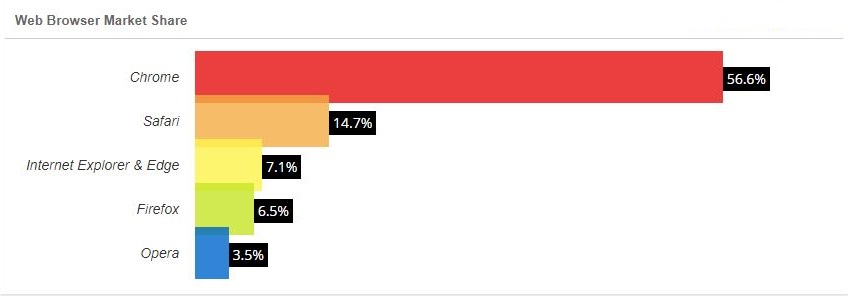

Интернет. Его история и развитие.
Internet
Интернет (произносится [интэрнэ́т]; англ. Internet) — всемирная система объединённых компьютерных сетей, построенная на использовании протокола IP и маршрутизации пакетов данных. Интернет образует глобальное информационное пространство, служит физической основой для Всемирной паутины и множества других систем (протоколов) передачи данных. Часто упоминается как «Всемирная сеть» и «Глобальная сеть». В настоящее время, когда слово «Интернет» употребляется в обиходе, чаще всего имеется в виду Всемирная паутина и доступная в ней информация, а не сама физическая сеть. К середине 2008 года число пользователей, регулярно использующих Интернет, составило около 1,5 млрд человек (около четверти населения Земли).
Всемирная паутина (англ. World Wide Web) — распределенная система, предоставляющая доступ к связанным между собой документам, расположенным на различных компьютерах, подключенных к Интернету. Всемирную паутину образуют миллионы web-серверов. Большинство ресурсов всемирной паутины представляет собой гипертекст. Гипертекстовые документы, размещаемые во всемирной паутине, называются web-страницами. Несколько web-страниц, объединенных общей темой, дизайном, а также связанных между собой ссылками и обычно находящихся на одном и том же web-сервере, называются web-сайтом. Всемирная паутина вызвала настоящую революцию в информационных технологиях и бум в развитии Интернета. Для обозначения Всемирной паутины также используют слово «веб» (англ. web) и «WWW».
Хронология события по годам
1969 - сеанс связи ARPANET
1971 - отправка первого email
1983 - ARPANET переходит на TCP/IP
1984 - запущена система DNS
1989 - появление WWW, HTTP, HTML
1993 - первый браузер NCSA Mosaic
1995 - Yahoo, Hotmail, Amazon.com
Компоненты WWW
- Функционирование сервиса обеспечивается четырьмя составляющими:
-
- URL/URI — унифицированный способ адресации и идентификации сетевых ресурсов;
- HTML — язык гипертекстовой разметки веб-документов;
- HTTP — протокол передачи гипертекста;
- CGI — общий шлюзовый интерфейс, представляющий доступ к серверным приложениям.
Адресация веб-ресурсов. URL, URN, URI
Для доступа к любым сетевым ресурсам необходимо знать, где они размещены, и как к ним можно обратиться. Во Всемирной паутине для обращения к веб-документам изначально используется стандартизированная схема адресации и идентификации, учитывающая опыт адресации и идентификации таких сетевых сервисов, как e-mail, telnet, ftp и т.п. — URL, Uniform Resource Locator.
URL (RFC 1738) — унифицированный локатор (указатель) ресурсов, стандартизированный способ записи адреса ресурса в www и сети Интернет. Адрес URL имеет гибкую и расширяемую структуру для максимально естественного указания местонахождения ресурсов в сети. Для записи адреса используется ограниченный набор символов ASCII. Общий вид адреса можно представить так:
<схема>://<логин>:<пароль>@<хост>:<порт>/<полный-путь-к-ресурсу>
Где:
схема
схема обращения к ресурсу: http, ftp, gopher, mailto, news, telnet, file, man, info, whatis, ldap, wais и т.п.
логин:пароль
имя пользователя и его пароль, используемые для доступа к ресурсу
хост
доменное имя хоста или его IP-адрес
порт
порт хоста для подключения
полный-путь-к-ресурсу
уточняющая информация о месте нахождения ресурса (зависит от протокола).
Язык гипертекстовой разметки HTML
HTML (HyperText Markup Language 'https//ru.wikipedia.org/wiki/HTML') — стандартный язык разметки документов во Всемирной паутине. Большинство веб-страниц созданы при помощи языка HTML. Язык HTML интерпретируется браузером и отображается в виде документа в удобной для человека форме. HTML является приложением SGML (стандартного обобщённого языка разметки) и соответствует международному стандарту ISO 8879.
HTML создавался как язык для обмена научной и технической документацией, пригодный для использования людьми, не являющимися специалистами в области вёрстки. Для этого он представляет небольшой (сравнительно) набор структурных и семантических элементов — тегов. С помощью HTML можно легко создать относительно простой, но красиво оформленный документ. Изначально язык HTML был задуман и создан как средство структурирования и форматирования документов без их привязки к средствам воспроизведения (отображения). В идеале, текст с разметкой HTML должен единообразно воспроизводиться на различном оборудовании (монитор ПК, экран планшета, ограниченный по размерам экран мобильного телефона, медиа-проектор). Однако современное применение HTML очень далеко от его изначальной задачи. Со временем основная идея платформонезависимости языка HTML стала жертвой коммерциализации www и потребностей в мультимедийном и графическом оформлении.
Протокол HTTP
HTTP (HyperText Transfer Protocol) — протокол передачи гипертекста, текущая версия HTTP/1.1 (RFC 2616). Этот протокол изначально был предназначен для обмена гипертекстовыми документами, но сейчас его возможности существенно расширены в сторону передачи двоичной информации.
HTTP — типичный клиент-серверный протокол, обмен сообщениями идёт по схеме «запрос-ответ» в виде ASCII-команд. Особенностью протокола HTTP является возможность указать в запросе и ответе способ представления одного и того же ресурса по различным параметрам: формату, кодировке, языку и т. д. Именно благодаря возможности указания способа кодирования сообщения клиент и сервер могут обмениваться двоичными данными, хотя данный протокол является символьно-ориентированным.
HTTP — протокол прикладного уровня, но используется также в качестве «транспорта» для других прикладных протоколов, в первую очередь, основанных на языке XML (SOAP, XML-RPC, SiteMap, RSS и проч.).
Общий шлюзовый интерфейс CGI
CGI (Common Gateway Interface) — механизм доступа к программам на стороне веб-сервера. Спецификация CGI была разработана для расширения возможностей сервиса www за счет подключения различного внешнего программного обеспечения. При использовании CGI веб-сервер представляет браузеру доступ к исполнимым программам, запускаемым на его (серверной) стороне через стандартные потоки ввода и вывода.
Интерфейс CGI применяется для создания динамических веб-сайтов, например, когда веб-страницы формируются из результатов запроса к базе данных. Сейчас популярность CGI снизилась, т.к. появились более совершенные альтернативные решения (например, модульные расширения веб-серверов).
Программное обеспечение сервиса WWW
Веб-сервер — это сетевое приложение, обслуживающее HTTP-запросы от клиентов, обычно веб-браузеров. Веб-сервер принимает запросы и возвращает ответы, обычно вместе с HTML-страницей, изображением, файлом, медиа-потоком или другими данными. Веб-серверы — основа Всемирной паутины. С расширением спектра сетевых сервисов веб-серверы все чаще используются в качестве шлюзов для серверов приложений или сами представляют такие функции (например, Apache Tomcat).
Созданием программного обеспечения веб-серверов занимаются многие разработчики, но наибольшую популярность (по статистике http://netcraft.com) имеют такие программные продукты, как Apache (Apache Software Foundation), IIS (Microsoft), Google Web Server (GWS, Google Inc.) и nginx.
Apache — свободное программное обеспечение, распространяется под совместимой с GPL лицензией. Apache уже многие годы является лидером по распространенности во Всемирной паутине в силу своей надежности, гибкости, масштабируемости и безопасности.
IIS (Internet Information Services) — проприетарный набор серверов для нескольких служб Интернета, разработанный Майкрософт и распространяемый с серверными операционными системами семейства Windows. Основным компонентом IIS является веб-сервер, также поддерживаются протоколы FTP, POP3, SMTP, NNTP.
Google Web Server (GWS) — разработка компании Google на основе веб-сервера Apache. GWS оптимизирован для выполнения приложений сервиса Google Applications.
nginx [engine x] — это HTTP-сервер, совмещенный с кэширующим прокси-сервером. Разработан И. Сысоевым для компании Рамблер. Осенью 2004 года вышел первый публично доступный релиз, сейчас nginx используется на 9-12% веб-серверов.
Браузеры
Браузер, веб-обозреватель (web-browser) — клиентское приложение для доступа к веб-серверам по протоколу HTTP и просмотра веб-страниц. Как правило браузеры дополнительно поддерживают и ряд других протоколов (например ftp, file, mms, pop3).
Первые HTTP-клиенты были консольными и работали в текстовом режиме, позволяя читать гипертекст и перемещаться по ссылкам. Сейчас консольные браузеры (такие, как lynx, w3m или links) практически не используются рядовыми посетителями веб-сайтов. Тем не менее такие браузеры весьма полезны для веб-разработчиков, так как позволяют «увидеть» веб-страницу «глазами» поискового робота.
Исторически первым браузером в современном понимании (т.е. с графическим интерфейсом и т.д.) была программа NCSA Mosaic, разработанная Марком Андерисеном и Эриком Бина. Mosaic имел довольно ограниченные возможности, но его открытый исходный код стал основой для многих последующих разработок.
Существует большое число программ-браузеров, но наибольшей популярностью пользуются следующие:
Chrome — кроссплатформенный браузер с открытым исходным кодом, разрабатываемый компанией Google. Первая стабильная версия вышла 11 декабря 2008 года. В отличие от многих других браузеров, в Chrome каждая вкладка является отдельным процессом. В случае если процесс обработки содержимого вкладки зависнет, его можно будет завершить без риска потери данных других вкладок. Еще одна особенность — интеллектуальная адресная строка (Omnibox). К возможности автозаполнения она добавляет поисковые функции с учетом популярности сайта, релевантности и пользовательских предпочтений (истории переходов).

Safari — проприетарный браузер, разработанный корпорацией Apple и входящий в состав операционной системы Mac OS X. Бесплатно распространяется для операционных систем семейства Microsoft Windows. В браузере используется уникальный по производительности интерпретатор JavaScript и еще ряд интересных для пользователя решений, которые отсутствуют или не развиты в других браузерах.

Firefox — свободный кроссплатформенный браузер, разрабатываемый Mozilla Foundation и распространяемый под тройной лицензией GPL/LGPL/MPL. В основе браузера — движок Gekko, который изначально создавался для Netscape Communicator. Однако, вместо того, чтобы предоставить все возможности движка в стандартной поставке, Firefox реализует лишь основную его функциональность, предоставляя пользователям возможность модифицировать браузер в соответствии с их требованиями через поддержку расширений (add-ons), тем оформления и плагинов.

Opera — кроссплатформенный многофункциональный веб-браузер, впервые представленный в 1994 году группой исследователей из норвежской компании Telenor. Дальнейшая разработка ведется Opera Software ASA. Этот браузер обладает высокой скоростью работы и совместим с основными стандартами. Отличительными особенностями Opera долгое время являлись многостраничный интерфейс и возможность масштабирования веб-страниц целиком. На разных этапах развития в Opera были интегрированы возможности почтового/новостного клиента, адресной книги, клиента сети BitTorrent, агрегатора RSS, клиента IRC, менеджера закачек, WAP-браузера, а также поддержка виджетов — графических модулей, работающих вне окна браузера.
Эволюция Веб сайтов
Web 1.0 - до .com bubble. Статичное содержание страниц, аскетичный дизайн, чаты, форумы, гостевые книги.
Web 2.0 - новое поколение сайтов (после 2001) User-generated content. Предоставление и потребление API. RSS. Обновление страниц «на лету» (ajax).
Web 3.0 - ??? Community-generated content. Семантическая паутина. Уникальные идентификаторы и микроформаты.